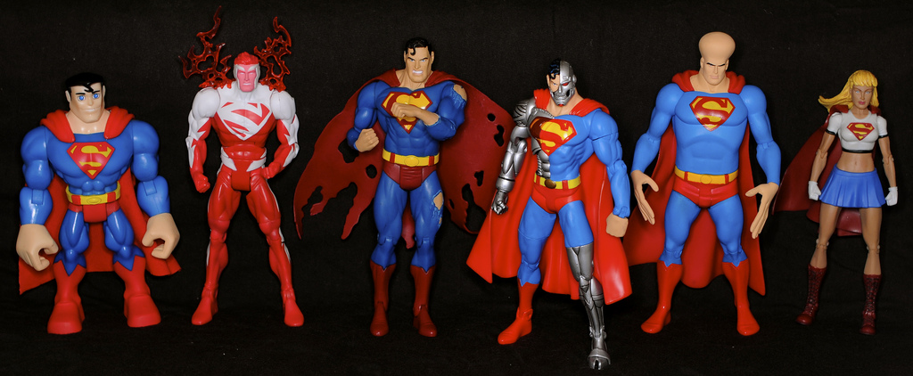
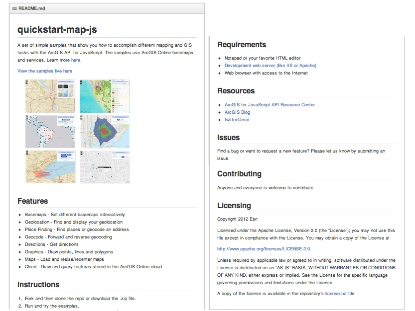
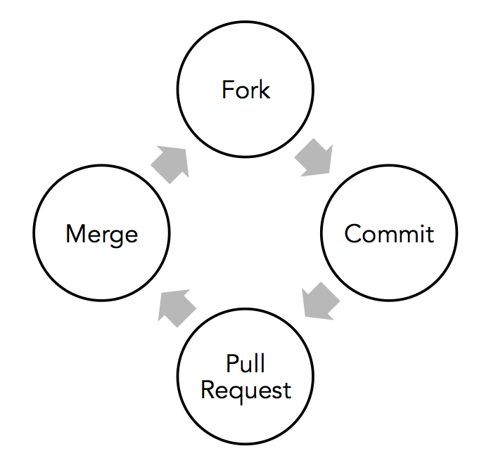
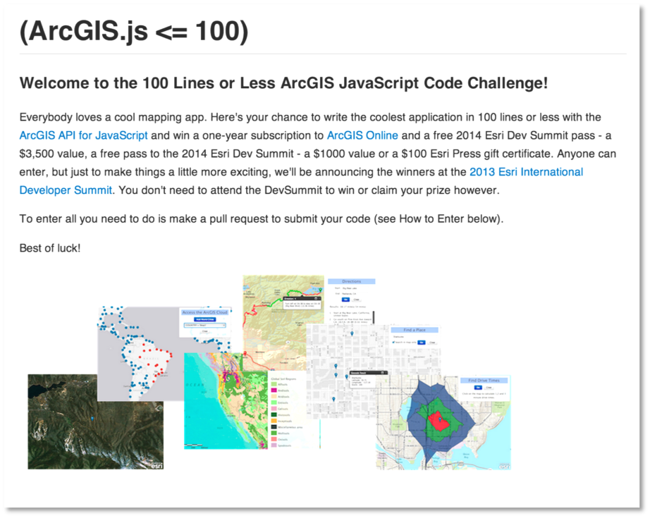

ESRI:
Going Open With GitHub
apps
toolsets
frameworks

share
collaborate
social

Today - Esri on GitHub
Plan
Implement
Execute
Challenges
Benefits
Already had a lot of stuff out there...
SourceForge, CodePlex, Google Code
personal accounts
Resource Centers
Zip Files
contribute?
collaborate?
new open projects
So what did we do?
team
buy-off
GitHub organization
workflows
projects
Esri is a very large organization
GitHub?
coolest
largest
popular
relatively easy
support for organizations
tons of features
api
GitHub for Organizations
Public
Free for everyone!
Private
Monthly plan.
Private
learn platform
work-flows
incubation
Membership 101
Teams
- Owner - admin and account access...
- Admin - create, transfer, add/remove...
- Push - write, merge, manage issues...
- Pull - fork, pull requests, comment...
GitHub has some interesting behaviors...
What happens when you transfer a repo?
Lose ownership
How can you see all private repos?
All Members Team
How do you contact all members?
GET /teams/:id/members
[
{
"login": "octocat",
"id": 1,
"avatar_url": "https://github.com/images/error/octocat_happy.gif",
"gravatar_id": "somehexcode",
"url": "https://api.github.com/users/octocat"
}
]
GET /users/:user
{
...
"email": "mrbob@esri.com",
...
}
Publishing Workflow
Git is not easy to use... at first...
- Create an account
- Install Git
- Install a client
- Find a repo
- Fork
- Clone
- Commit
- Push
- Pull Request
What the heck is a pull request?
Why can't I merge?
Rebase what?
Repo Standards
There are none!
Name
repo-name-language
e.g. arcgis-flex-viewer
e.g. quickstart-map-js
Description
<140 characters
e.g. ArcGIS JavaScript mapping app to get you started fast.
README.md
There's nothing worse that a bad README.md!
Key Components
Description
Features
Instructions
Requirements
Resources
Issues
Contributing
Licensing
the ultimate README.md!
Contributions
"Contributing" REPO
Contribute
Issues
Licensing
Contribution.md
Esri welcomes contributions from anyone and everyone. Please see our
[guidelines for contributing](https://github.com/esri/contributing).
Support
email hooks
receive notification
issues, comments, pull requests
action
Viewing Apps Live
gh-pages
esri demoserver
Your Web Presence
esri.github.io
Dynamic Build
require "json"
require "yaml"
require "hashie"
require "rest-client"
require "erb"
# Get repos - Limited to 5000 requests per hour
@repo_array = JSON.parse(RestClient.get(@base_url+"/orgs/esri/repos?type=public&page=1&per_page=100", content_type: :json))
@repos ||= @repo_array.collect! do |repo|
if !repo["name"].nil?
# Get repo info
repo_name = repo["name"]
repo_desc = repo["description"]
repo_likes = repo["likes"]
repo_forks = repo["forks"]
# Extract README.md Esri tags
uri = URI(@base_url+"/repos/Esri/" + repo["name"] + "/contents/README.md")
repo_readme = RestClient.get(uri.to_s, content_type: :json)
if !repo_readme.nil?
repo_readme = JSON.parse(repo_readme)
content = Base64.decode64(repo_readme["content"])
if content
tags = content[/.*\(Esri Tags:(.*?)\)/,1]
tags = !tags.nil? ? tags.strip : @default_tag
language = content[/.*\(Esri Language:(.*?)\)/,1]
end
end
Hashie::Mash.new(repo)
end
Language Detection
README.md
...
[](Esri Tags: ArcGIS Web Mapping Leaflet)
[](Esri Language: JavaScript)
Yes, GitHub is new for some people!
Stop downloading zipfiles!
Work-flow
Blogs
Workshops
Videos
Connecting Resources
ArcGIS Online -> GitHub
GitHub -> ArcGIS Online
Open Source Projects
Flex Viewer
ArcGIS GIS web client
Complete Source code
Very active
geocoder widget
Geosearch place finding
ArcGIS JavaScript source
Easy to customize
Terraformer
JavaScript Geo library
GeoJSON, ArcGIS JSON, WKT
Geospatial operations
esri-leaflet
JavaScript mapping plug-in
ArcGIS basemaps
ArcGIS feature and map services
geoportal Server
Discovery tool
Catalog geospatial resources
Metadata
Local Government
Water Utility Network Editing
Special Event Planning
Address Data Management
GIS Tools for Hadoop
Geoprocessing tools
Big data spatial analyses
geometry-api-java
Products
arcgis-viewer-flex
arcgis-viewer-flex-builder
arcgis-osm-editor
Apps
sencha-touch-map-checkin-js
maps-app-android
driving-directions-ios
Templates
dojo-bootstrap-ui-for-maps-js
3d-cities-template
basic-storytelling-template-js
Government and Industry
executive-dashboard
park-and-recreation-finder
citizen-service-request
GeoTools
terraformer
node-geoservices-adaptor/koop
geoservices-js
100 lines or less
So what can you do?
stats
and then something else happened...
Internal GitHub
GitHub Enterprise
Your own GitHub
SaaS
Fully featured
Core development
Website development
Wiki
Benefits
Distributed
Branch and merge
Collaboration
Even support staff use GitHub!
Challenges
Cross-repo normalization
Limited enterprise-level admin
LDAP for security groups
In the end...
Two GitHub implementations
>300 software engineers
>130 geospatial projects
Share
Collaborate
Engage
Join us on esri.github.io
THE END
Allan Laframboise / @Al_laframboise